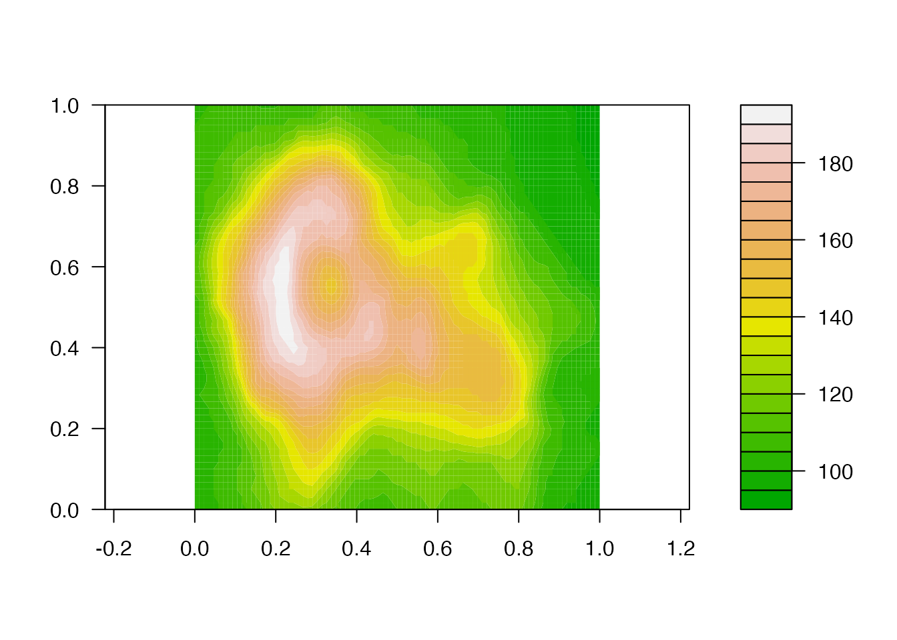
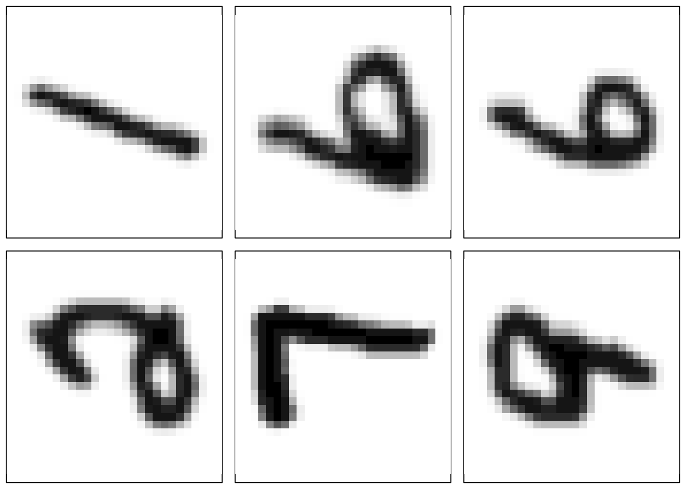

vignettes/hyperparameter-tuning-orig.Rmd
hyperparameter-tuning-orig.RmdThis vignette will illustrate the tuning of hyperparameters at two pre-processing steps provided by {tdarec}: the computation of persistent homology from data, and the vectorization of the resulting persistence data. Because the logic and syntax can become confusing, the vignette will also illustrate how to tune model hyperparameters in the same workflow as those of the pre-processing recipe.1
library(tidymodels)
#> ── Attaching packages ────────────────────────────────────── tidymodels 1.3.0 ──
#> ✔ broom 1.0.8 ✔ recipes 1.3.0
#> ✔ dials 1.4.0 ✔ rsample 1.3.0
#> ✔ dplyr 1.1.4 ✔ tibble 3.2.1
#> ✔ ggplot2 3.5.2 ✔ tidyr 1.3.1
#> ✔ infer 1.0.8 ✔ tune 1.3.0
#> ✔ modeldata 1.4.0 ✔ workflows 1.2.0
#> ✔ parsnip 1.3.1 ✔ workflowsets 1.1.0
#> ✔ purrr 1.0.4 ✔ yardstick 1.3.2
#> ── Conflicts ───────────────────────────────────────── tidymodels_conflicts() ──
#> ✖ purrr::discard() masks scales::discard()
#> ✖ dplyr::filter() masks stats::filter()
#> ✖ dplyr::lag() masks stats::lag()
#> ✖ recipes::step() masks stats::step()
library(tdarec)The persistent homology (PH) of a real-valued function on a manifold is determined by the sublevel set filtration: Given , for each value define , so that whenever . Then the induced homomorphisms between (singular) homology groups form a persistence module whose decomposition obtains the birth–death pairs that comprise the persistence diagram of .
While some such computations can be done analytically, most data come in the form of discrete measurements rather than functional relationships. For example, the topographic data for the Maunga Whau caldera take the form of a 2-dimensional numeric array, with each cell containing the estimated elevation of a 100–square meter area:
filled.contour(volcano, color.palette = terrain.colors, asp = 1)
This is a discretization of a height function from latitude and longitude (, approximated locally by ) to elevation (), and cubical persistent homology is an alternative to the simplicial computation designed specifically for data in this form. The {ripserr} package ports the Cubical Ripser algorithm to R and serves as the engine for this pre-processing step.
The MNIST handwritten digits data set comprises 70,000 pixellated black-and-white images of the numerals 0–9 obtained from forms completed by US Census Bureau field staff and Maryland high school students. The images are partitioned into a training set of 60,000 and a testing set of 10,000, and {tdavec} comes with a 1% random sample from each. For example, here are the first six digits, labeled :
par(mfrow = c(2, 3), mar = c(.5, .5, .5, .5))
for (r in seq(6)) {
image(
mnist_train$digit[[r]],
col = grey.colors(256, start = 0, end = 1, rev = TRUE),
xaxt = "n", yaxt = "n", asp = 1
)
}
(That the digits are rotated from their usual orientation is not a
problem for the methods used here.) To respect Tidymodels conventions,
we convert the label column from integer to factor before
continuing.
Following a standard ML approach, we prepare the training set for 6-fold cross-validation, which will be used to choose hyperparameter settings that maximize the accuracy of a classifier. The optimized settings will be used to classify the digits in the testing set, and a comparison with the true labels will provide an estimate of the accuracy of the resulting model.
(mnist_folds <- vfold_cv(mnist_train, v = 6))
#> # 6-fold cross-validation
#> # A tibble: 6 × 2
#> splits id
#> <list> <chr>
#> 1 <split [500/100]> Fold1
#> 2 <split [500/100]> Fold2
#> 3 <split [500/100]> Fold3
#> 4 <split [500/100]> Fold4
#> 5 <split [500/100]> Fold5
#> 6 <split [500/100]> Fold6For reference, we check the range of the values that populate the arrays:
This indicates that the greyscale images are coded as integers between and , and we will use this information to inform our pre-processing steps.
Before taking on the challenge of tuning, we walk through the modeling process using fixed parameters. This will help ensure that our approach is sound, for example by prompting us to think through our choices and flagging unforeseen problems. It will also allow us to compare the performance of the model under “trialed” versus tuned parameter settings.
The first step is to prepare the pre-processing recipe. Ours goes in three steps: Blur the original images, compute their cubical persistence diagrams, and transform these diagrams into vectorized persistence landscapes. We comment on each step:
step_blur() to compute a default standard deviation for the
Gaussian as described in help(blur).Only the final pre-processing step yields new numeric columns that
can be used as predictors in a conventional model. For this reason, the
PH step by default assigns the placeholder role
"persistence diagram" to its output, so that the new
digit_pd column will not accidentally be used as a
predictor. In contrast, the blur step modifies its column
digit in place, and the
modified column inherits the role(s) of the original. This requires
us to update the role of digit, but this can be done before
or after applying the blur.
recipe(mnist_train) |>
update_role(label, new_role = "outcome") |>
update_role(digit, new_role = "image") |>
step_blur(digit) |>
step_pd_raster(digit) |>
step_vpd_persistence_landscape(
digit_pd,
hom_degree = 1,
xmin = 0, xmax = 255, xby = 16,
num_levels = 3
) |>
print() -> mnist_rec
#>
#> ── Recipe ──────────────────────────────────────────────────────────────────────
#>
#> ── Inputs
#> Number of variables by role
#> outcome: 1
#> image: 1
#>
#> ── Operations
#> • Gaussian blurring of: digit
#> • persistent features from a cubical filtration of: digit
#> • persistence landscape of: digit_pdWe can check directly whether our role assignments obtained as expected:
mnist_rec |>
prep() |>
print() -> mnist_prep
#>
#> ── Recipe ──────────────────────────────────────────────────────────────────────
#>
#> ── Inputs
#> Number of variables by role
#> outcome: 1
#> image: 1
#>
#> ── Training information
#> Training data contained 600 data points and no incomplete rows.
#>
#> ── Operations
#> • Gaussian blurring of: <none> | Trained
#> • persistent features from a cubical filtration of: <none> | Trained
#> • persistence landscape of: <none> | Trained
summary(mnist_prep)
#> # A tibble: 51 × 4
#> variable type role source
#> <chr> <list> <chr> <chr>
#> 1 digit <chr [1]> image original
#> 2 label <chr [3]> outcome original
#> 3 digit_pd <chr [1]> persistence diagram derived
#> 4 digit_pd_pl_1_1 <chr [2]> predictor derived
#> 5 digit_pd_pl_1_2 <chr [2]> predictor derived
#> 6 digit_pd_pl_1_3 <chr [2]> predictor derived
#> 7 digit_pd_pl_1_4 <chr [2]> predictor derived
#> 8 digit_pd_pl_1_5 <chr [2]> predictor derived
#> 9 digit_pd_pl_1_6 <chr [2]> predictor derived
#> 10 digit_pd_pl_1_7 <chr [2]> predictor derived
#> # ℹ 41 more rowsAnd we can inspect the result of applying the prepared recipe to the training data:
mnist_rec |>
prep() |>
bake(new_data = mnist_train)
#> # A tibble: 600 × 51
#> digit label digit_pd digit_pd_pl_1_1 digit_pd_pl_1_2 digit_pd_pl_1_3
#> <list> <fct> <list> <dbl> <dbl> <dbl>
#> 1 <dbl[…]> 1 <PHom [7 × 3]> 0 0 3.15
#> 2 <dbl[…]> 6 <PHom [4 × 3]> 0 0 0
#> 3 <dbl[…]> 6 <PHom [4 × 3]> 0 0 0
#> 4 <dbl[…]> 2 <PHom [6 × 3]> 0 0 0
#> 5 <dbl[…]> 7 <PHom [4 × 3]> 0 0 0
#> 6 <dbl[…]> 9 <PHom [4 × 3]> 0 0 0
#> 7 <dbl[…]> 2 <PHom [5 × 3]> 0 0 5.49
#> 8 <dbl[…]> 0 <PHom [7 × 3]> 0 0 0
#> 9 <dbl[…]> 4 <PHom [5 × 3]> 0 0 0
#> 10 <dbl[…]> 3 <PHom [5 × 3]> 0 0 0
#> # ℹ 590 more rows
#> # ℹ 45 more variables: digit_pd_pl_1_4 <dbl>, digit_pd_pl_1_5 <dbl>,
#> # digit_pd_pl_1_6 <dbl>, digit_pd_pl_1_7 <dbl>, digit_pd_pl_1_8 <dbl>,
#> # digit_pd_pl_1_9 <dbl>, digit_pd_pl_1_10 <dbl>, digit_pd_pl_1_11 <dbl>,
#> # digit_pd_pl_1_12 <dbl>, digit_pd_pl_1_13 <dbl>, digit_pd_pl_1_14 <dbl>,
#> # digit_pd_pl_1_15 <dbl>, digit_pd_pl_1_16 <dbl>, digit_pd_pl_2_1 <dbl>,
#> # digit_pd_pl_2_2 <dbl>, digit_pd_pl_2_3 <dbl>, digit_pd_pl_2_4 <dbl>, …In the next code chunk we specify a random forest (RF) model to classify the digits using vectorized persistence landscapes. RFs are ubiquitous in ML for their combination of flexibility and performance: They can be used almost anywhere and generally produce more models that are competitive with or superior to classical models like decision trees and generalized linear models. They also come with a medley of tuning parameters. In this vignette, we demonstrate the use of 3 hyperparameters, each treated differently:
trees of trees in each forest is fixed at
300.The {randomForest} engine is strict in its requirements: If all predictors have zero variance, i.e. there is no way to generate different predictors for different cases, then the model fails with an error. This is a serious possibility for our setting, for instance if no degree-1 features are detected so that the persistence landscapes are uniformly zero. To prevent this from derailing our workflow, we use the {ranger} engine, which is tolerant of this situation, instead.
rand_forest(
trees = 300,
min_n = 6,
mtry = 2
) |>
set_mode("classification") |>
set_engine("ranger") |>
print() -> mnist_spec
#> Random Forest Model Specification (classification)
#>
#> Main Arguments:
#> mtry = 2
#> trees = 300
#> min_n = 6
#>
#> Computational engine: rangerWe fit the model to the pre-processed training data:
fit(
mnist_spec,
mnist_rec |> prep() |> formula(),
data = mnist_rec |> prep() |> bake(new_data = mnist_train)
) |>
print() -> mnist_fit
#> parsnip model object
#>
#> Ranger result
#>
#> Call:
#> ranger::ranger(x = maybe_data_frame(x), y = y, mtry = min_cols(~2, x), num.trees = ~300, min.node.size = min_rows(~6, x), num.threads = 1, verbose = FALSE, seed = sample.int(10^5, 1), probability = TRUE)
#>
#> Type: Probability estimation
#> Number of trees: 300
#> Sample size: 600
#> Number of independent variables: 48
#> Mtry: 2
#> Target node size: 6
#> Variable importance mode: none
#> Splitrule: gini
#> OOB prediction error (Brier s.): 0.7845969Note that the model, while not optimized for accuracy on the training set, is informed by it through the preparation process, in particular the default choice of blur parameter:
mnist_prep$steps[[1]]$blur_sigmas
#> digit
#> 3.5To evaluate the model, we generate predictions for the testing set and compare them to the true labels. Because accuracy is a coarse metric for a 10-value classification task, we examine the confusion matrix to get a sense of what errors are most common.
mnist_fit |>
predict(new_data = bake(prep(mnist_rec), new_data = mnist_test)) |>
bind_cols(select(mnist_test, label)) |>
print() -> mnist_pred
#> # A tibble: 100 × 2
#> .pred_class label
#> <fct> <fct>
#> 1 5 0
#> 2 4 1
#> 3 1 4
#> 4 4 1
#> 5 1 2
#> 6 0 0
#> 7 1 4
#> 8 6 9
#> 9 3 6
#> 10 5 0
#> # ℹ 90 more rows
mnist_pred |>
conf_mat(truth = label, estimate = .pred_class)
#> Truth
#> Prediction 0 1 2 3 4 5 6 7 8 9
#> 0 2 0 3 4 0 0 1 2 0 0
#> 1 0 5 1 0 4 2 0 0 0 0
#> 2 0 0 0 0 0 0 0 0 0 0
#> 3 0 0 0 1 0 1 2 0 3 0
#> 4 0 3 1 1 6 1 0 0 1 0
#> 5 2 1 0 3 0 4 2 1 1 0
#> 6 2 0 5 0 0 0 4 3 4 5
#> 7 3 1 0 0 0 2 0 1 0 5
#> 8 0 0 0 1 0 0 1 0 1 0
#> 9 1 0 0 0 0 0 0 3 0 0
mnist_pred |>
accuracy(truth = label, estimate = .pred_class)
#> # A tibble: 1 × 3
#> .metric .estimator .estimate
#> <chr> <chr> <dbl>
#> 1 accuracy multiclass 0.24The accuracy is poor but clearly better than chance. The confusion matrix suggests some reasons for the misclassifications, in that the most commonly confused digits are not those with the same degree-1 homology; they are more geometrically than topologically similar. This could be due to excessive blur; the standard deviation of 3.5 may be too high. We can compare this default to the value obtained through tuning.
We now extend the process above to choose, bound, and tune several pre-processing and modeling hyperparameters.
We rewrite the recipe to prepare the hyperparameters for tuning
rather than to assign them fixed values. Each parameter is given a
character ID that will refer to it in the various system messages and
outputs. Beware that this section of the vignette overwrites all
mnist_* variable names used in the previous section! This
is for readability but can cause problems if parts are executed out of
order.
recipe(mnist_train) |>
update_role(label, new_role = "outcome") |>
update_role(digit, new_role = "image") |>
step_blur(digit, blur_sigmas = tune("blur_sd")) |>
step_pd_raster(digit) |>
step_vpd_persistence_landscape(
digit_pd,
hom_degree = tune("pl_deg"),
xmin = 0, xmax = 255, xby = 16,
num_levels = tune("pl_lev")
) |>
print() -> mnist_rec
#>
#> ── Recipe ──────────────────────────────────────────────────────────────────────
#>
#> ── Inputs
#> Number of variables by role
#> outcome: 1
#> image: 1
#>
#> ── Operations
#> • Gaussian blurring of: digit
#> • persistent features from a cubical filtration of: digit
#> • persistence landscape of: digit_pdThis recipe has three tunable parameters, as we can verify by extracting their dials:
( rec_dials <- extract_parameter_set_dials(mnist_rec) )
#> Collection of 3 parameters for tuning
#>
#> identifier type object
#> blur_sd blur_sigmas nparam[?]
#> pl_deg hom_degree nparam[?]
#> pl_lev num_levels nparam[?]
#>
#> Recipe parameters needing finalization:
#> Gaussian Blur std. dev.s ('blur_sd') , Homological Degree ('pl_deg') , and #
#> Levels or envelopes ('pl_lev')
#>
#> See `?dials::finalize()` or `?dials::update.parameters()` for more information.Note that all three require finalization; like the number of randomly sampled predictors for each tree in a random forest, their ranges should not be guessed but must be determined from the content of the data. In fact, the persistence landscape hyperparameters must be determined from columns derived by the first two steps from the input columns, not from the input columns themselves. For this reason only, we train the recipe with some intuitive values in order to obtain these derived columns for tuning purposes:
mnist_rec |>
finalize_recipe(parameters = list(blur_sd = 8, pl_deg = 0, pl_lev = 3)) |>
prep() |>
bake(new_data = mnist_train) ->
mnist_bake
print(mnist_bake)
#> # A tibble: 600 × 51
#> digit label digit_pd digit_pd_pl_1_1 digit_pd_pl_1_2 digit_pd_pl_1_3
#> <list> <fct> <list> <dbl> <dbl> <dbl>
#> 1 <dbl[…]> 1 <PHom [6 × 3]> 0 5.19 0
#> 2 <dbl[…]> 6 <PHom [4 × 3]> 0 0 3.85
#> 3 <dbl[…]> 6 <PHom [4 × 3]> 0 0 15.2
#> 4 <dbl[…]> 2 <PHom [4 × 3]> 0 0 0
#> 5 <dbl[…]> 7 <PHom [4 × 3]> 0 0 5.33
#> 6 <dbl[…]> 9 <PHom [4 × 3]> 0 0 7.97
#> 7 <dbl[…]> 2 <PHom [4 × 3]> 0 0 6.87
#> 8 <dbl[…]> 0 <PHom [4 × 3]> 0 0 9.98
#> 9 <dbl[…]> 4 <PHom [4 × 3]> 0 0 5.14
#> 10 <dbl[…]> 3 <PHom [4 × 3]> 0 0 11.1
#> # ℹ 590 more rows
#> # ℹ 45 more variables: digit_pd_pl_1_4 <dbl>, digit_pd_pl_1_5 <dbl>,
#> # digit_pd_pl_1_6 <dbl>, digit_pd_pl_1_7 <dbl>, digit_pd_pl_1_8 <dbl>,
#> # digit_pd_pl_1_9 <dbl>, digit_pd_pl_1_10 <dbl>, digit_pd_pl_1_11 <dbl>,
#> # digit_pd_pl_1_12 <dbl>, digit_pd_pl_1_13 <dbl>, digit_pd_pl_1_14 <dbl>,
#> # digit_pd_pl_1_15 <dbl>, digit_pd_pl_1_16 <dbl>, digit_pd_pl_2_1 <dbl>,
#> # digit_pd_pl_2_2 <dbl>, digit_pd_pl_2_3 <dbl>, digit_pd_pl_2_4 <dbl>, …We use the input digit column to finalize the range of
blurs and the derived digit_pd column to finalize the range
of homological degree. We expect the important topological features of
the digits number at most 2 per image, so we manually prescribe a narrow
range for num_levels, though it could also be learned from
the training set. Each finalized range is printed for reference:
( blur_sd_fin <- finalize(blur_sigmas(), mnist_train |> select(digit)) )
#> Gaussian Blur std. dev.s (quantitative)
#> Transformer: log1p [-1, Inf]
#> Range (transformed scale): [0.504, 2.5]
( pl_deg_fin <- finalize(hom_degree(), mnist_bake |> select(digit_pd)) )
#> Homological Degree (quantitative)
#> Range: [0, 1]
( pl_lev_fin <- num_levels(range = c(1, 3)) )
#> # Levels or envelopes (quantitative)
#> Range: [1, 3]Note that the homological degree ranges only from to because the image has dimension 2.
As noted earlier, the three hyperparameters of the RF specification
will be treated in different ways: trees fixed at
,
min_n tuned over a default grid, and mtry
tuned over a grid learned from the training set.
rand_forest(
trees = 300,
min_n = tune("rf_node"),
mtry = tune("rf_pred")
) |>
set_mode("classification") |>
set_engine("ranger") |>
print() -> mnist_spec
#> Random Forest Model Specification (classification)
#>
#> Main Arguments:
#> mtry = tune("rf_pred")
#> trees = 300
#> min_n = tune("rf_node")
#>
#> Computational engine: rangerWe can again check for the two tunable hyperparameters by extracting their dials:
( spec_dials <- extract_parameter_set_dials(mnist_spec) )
#> Collection of 2 parameters for tuning
#>
#> identifier type object
#> rf_pred mtry nparam[?]
#> rf_node min_n nparam[+]
#>
#> Model parameters needing finalization:
#> # Randomly Selected Predictors ('rf_pred')
#>
#> See `?dials::finalize()` or `?dials::update.parameters()` for more information.As seen in the printed dials, one hyperparameter range must be finalized. The process for doing so is the same as for the recipe, but in this case the variables of interest are the vectorized features. We see from the pre-processed data that these features use a consistent naming convention, and we use this convention to select them for learning the range:
At last we arrive at the crux of this vignette! In preparation for tuning, we wrap the pre-processing recipe and the model specification in a workflow:
workflow() |>
add_recipe(mnist_rec) |>
add_model(mnist_spec) |>
print() -> mnist_wflow
#> ══ Workflow ════════════════════════════════════════════════════════════════════
#> Preprocessor: Recipe
#> Model: rand_forest()
#>
#> ── Preprocessor ────────────────────────────────────────────────────────────────
#> 3 Recipe Steps
#>
#> • step_blur()
#> • step_pd_raster()
#> • step_vpd_persistence_landscape()
#>
#> ── Model ───────────────────────────────────────────────────────────────────────
#> Random Forest Model Specification (classification)
#>
#> Main Arguments:
#> mtry = tune("rf_pred")
#> trees = 300
#> min_n = tune("rf_node")
#>
#> Computational engine: rangerOne way to systematically optimize the recipe and model hyperparameters—to tune the dials—is via a grid. This can be important when the parameters have known trade-offs or the objective function is expected to have multiple optima, so the investigator wants a course-grained “map” of how performance varies across the whole parameter space. For illustration, we construct a workflow grid by crossing a recipe grid with a model grid:
mnist_rec_grid <-
grid_regular(blur_sd_fin, pl_deg_fin, pl_lev_fin, levels = 3) |>
set_names(c("blur_sd", "pl_deg", "pl_lev"))
mnist_spec_grid <-
grid_regular(min_n(), mtry_fin, levels = 3) |>
set_names(c("rf_node", "rf_pred"))
mnist_grid <- merge(mnist_rec_grid, mnist_spec_grid)
head(mnist_grid)
#> blur_sd pl_deg pl_lev rf_node rf_pred
#> 1 0.6554575 0 1 2 1
#> 2 3.5000000 0 1 2 1
#> 3 11.2322682 0 1 2 1
#> 4 0.6554575 1 1 2 1
#> 5 3.5000000 1 1 2 1
#> 6 11.2322682 1 1 2 1This approach is not as inefficient as it might seem: As implemented in Tidymodels, grid tuning recognizes the order of the pre-processing steps, and sometimes of the model construction, and only performs each step once for every combination of subsequent steps, using the temporarily stored results rather than recomputing them from scratch. The unexecuted code chunk below shows the syntax for conducting this grid search:
mnist_res <- tune_grid(
mnist_wflow,
resamples = mnist_folds,
grid = mnist_grid,
metrics = metric_set(accuracy, roc_auc),
control = control_grid()
)Still, however, due to the exceptionally costly computations involved, a more targeted search is preferable. For this reason, Motta, Tralie, &al (2019) recommend Bayesian optimization for ML using topological features. This procedure is also implemented in Tidymodels and executed below. First, we combine the extracted dials from the pre-processing recipe and the model specification and update them with the finalized ranges:
wflow_dials <- bind_rows(rec_dials, spec_dials) |>
update(blur_sd = blur_sd_fin, pl_deg = pl_deg_fin, pl_lev = pl_lev_fin) |>
update(rf_pred = mtry_fin)The tuning syntax is similar to that of the grid search, but in place of the grid we only provide the updated dials. We specify 6 initial seeds with 12 tuning iterations each.
mnist_res <- tune_bayes(
mnist_wflow,
resamples = mnist_folds,
param_info = wflow_dials,
metrics = metric_set(accuracy, roc_auc),
initial = 6, iter = 12
)
#> → A | warning: ! 19 columns were requested but there were 16 predictors in the data.
#> ℹ 16 predictors will be used.
#> There were issues with some computations A: x1
#> → B | warning: ! 48 columns were requested but there were 32 predictors in the data.
#> ℹ 32 predictors will be used.
#> There were issues with some computations A: x1There were issues with some computations A: x1 B: x1
#> → C | warning: ! 38 columns were requested but there were 16 predictors in the data.
#> ℹ 16 predictors will be used.
#> There were issues with some computations A: x1 B: x1There were issues with some computations A: x1 B: x1 C: x1
#> There were issues with some computations A: x2 B: x2 C: x1
#> There were issues with some computations A: x2 B: x2 C: x2
#> There were issues with some computations A: x3 B: x2 C: x2
#> There were issues with some computations A: x3 B: x3 C: x2
#> There were issues with some computations A: x3 B: x3 C: x3
#> There were issues with some computations A: x4 B: x4 C: x3
#> There were issues with some computations A: x4 B: x4 C: x4
#> There were issues with some computations A: x5 B: x4 C: x4
#> There were issues with some computations A: x5 B: x5 C: x4
#> There were issues with some computations A: x5 B: x5 C: x5
#> There were issues with some computations A: x6 B: x6 C: x5
#> There were issues with some computations A: x6 B: x6 C: x6
#> ! The Gaussian process model is being fit using 5 features but only has 6
#> data points to do so. This may cause errors or a poor model fit.
#> → D | warning: ! 28 columns were requested but there were 16 predictors in the data.
#> ℹ 16 predictors will be used.
#> There were issues with some computations A: x6 B: x6 C: x6There were issues with some computations A: x6 B: x6 C: x6 D: x1
#> There were issues with some computations A: x6 B: x6 C: x6 D: x4
#> There were issues with some computations A: x6 B: x6 C: x6 D: x6
#> There were issues with some computations A: x6 B: x6 C: x6 D: x6Whereas in the previous section we fit only a single model, in this section we have obtained results for numerous hyperparameter settings and must choose among them for the final model. We first inspect the top several models, for a sense of how rapidly performance drops away from the optimal settings, then select the top-performing settings for the final model. We computed both accuracy and area under the ROC curve, but we use only the former to inform this choice.
collect_metrics(mnist_res) |>
filter(.metric == "accuracy") |>
arrange(desc(mean))
#> # A tibble: 18 × 12
#> blur_sd pl_deg pl_lev rf_pred rf_node .metric .estimator mean n std_err
#> <dbl> <int> <int> <int> <int> <chr> <chr> <dbl> <int> <dbl>
#> 1 0.670 0 2 2 15 accuracy multiclass 0.412 6 0.0125
#> 2 4.87 0 3 20 39 accuracy multiclass 0.41 6 0.0151
#> 3 4.50 0 3 10 32 accuracy multiclass 0.388 6 0.00703
#> 4 5.42 0 3 11 17 accuracy multiclass 0.383 6 0.0128
#> 5 4.55 0 3 32 3 accuracy multiclass 0.383 6 0.0182
#> 6 5.25 0 3 33 39 accuracy multiclass 0.373 6 0.0133
#> 7 0.690 0 1 12 22 accuracy multiclass 0.36 6 0.0193
#> 8 0.914 0 1 1 7 accuracy multiclass 0.357 6 0.0126
#> 9 0.655 0 1 19 17 accuracy multiclass 0.352 6 0.0199
#> 10 3.98 0 3 6 6 accuracy multiclass 0.333 6 0.00558
#> 11 4.81 1 3 48 39 accuracy multiclass 0.303 6 0.0171
#> 12 4.09 1 2 3 38 accuracy multiclass 0.282 6 0.0199
#> 13 2.68 1 2 48 40 accuracy multiclass 0.267 6 0.0191
#> 14 2.43 0 3 3 40 accuracy multiclass 0.248 6 0.00703
#> 15 5.10 0 1 28 40 accuracy multiclass 0.238 6 0.0209
#> 16 1.47 1 3 29 2 accuracy multiclass 0.212 6 0.0176
#> 17 7.20 1 2 1 24 accuracy multiclass 0.158 6 0.0180
#> 18 11.2 0 1 38 9 accuracy multiclass 0.153 6 0.0173
#> # ℹ 2 more variables: .config <chr>, .iter <int>
(mnist_best <- select_best(mnist_res, metric = "accuracy"))
#> # A tibble: 1 × 6
#> blur_sd pl_deg pl_lev rf_pred rf_node .config
#> <dbl> <int> <int> <int> <int> <chr>
#> 1 0.670 0 2 2 15 Iter12Now, finally, we fit the tuned model to the training set:
mnist_fin <- prep(finalize_recipe(mnist_rec, mnist_best))
fit(
finalize_model(mnist_spec, mnist_best),
formula(mnist_fin),
data = bake(mnist_fin, new_data = mnist_train)
) |>
print() -> mnist_fit
#> parsnip model object
#>
#> Ranger result
#>
#> Call:
#> ranger::ranger(x = maybe_data_frame(x), y = y, mtry = min_cols(~2L, x), num.trees = ~300, min.node.size = min_rows(~15L, x), num.threads = 1, verbose = FALSE, seed = sample.int(10^5, 1), probability = TRUE)
#>
#> Type: Probability estimation
#> Number of trees: 300
#> Sample size: 600
#> Number of independent variables: 32
#> Mtry: 2
#> Target node size: 15
#> Variable importance mode: none
#> Splitrule: gini
#> OOB prediction error (Brier s.): 0.5821558The resulting RF correctly classifies roughly half of the images “out
of bag”—not great, but much better than the model using intuited
hyperparameter values (and than pure chance). (Note also that the
blur standard deviation is lower than originally defaulted
to.) As before, we can look to the confusion matrix for insights into
the sources of error:
mnist_fit |>
predict(new_data = bake(mnist_fin, new_data = mnist_train)) |>
bind_cols(select(mnist_train, label)) |>
print() -> mnist_pred
#> # A tibble: 600 × 2
#> .pred_class label
#> <fct> <fct>
#> 1 1 1
#> 2 6 6
#> 3 6 6
#> 4 6 2
#> 5 3 7
#> 6 9 9
#> 7 2 2
#> 8 0 0
#> 9 4 4
#> 10 7 3
#> # ℹ 590 more rows
mnist_pred |>
conf_mat(truth = label, estimate = .pred_class)
#> Truth
#> Prediction 0 1 2 3 4 5 6 7 8 9
#> 0 52 0 0 2 0 1 2 0 0 3
#> 1 0 54 4 6 8 13 3 20 0 2
#> 2 0 0 20 0 0 0 0 0 0 1
#> 3 0 2 5 24 6 9 1 4 0 1
#> 4 0 0 5 2 24 5 1 5 0 0
#> 5 1 1 7 12 11 27 1 11 0 1
#> 6 2 0 7 0 4 0 43 0 3 3
#> 7 0 3 7 14 6 4 3 20 0 0
#> 8 2 0 1 0 0 0 1 0 52 1
#> 9 3 0 4 0 1 1 5 0 5 48
mnist_pred |>
accuracy(truth = label, estimate = .pred_class)
#> # A tibble: 1 × 3
#> .metric .estimator .estimate
#> <chr> <chr> <dbl>
#> 1 accuracy multiclass 0.607Among the most-confused digits in previous runs of these experiments are and , and , and and . (The results above should be similar but will depend somewhat on the state of the random number generator.) This is more in keeping with the topological similarities of the digits, though geometry is also clearly playing a role.
Finally, we evaluate the final model on the testing set—the holdout data from the original partition.
mnist_fit |>
predict(new_data = bake(mnist_fin, new_data = mnist_test)) |>
bind_cols(select(mnist_test, label)) |>
print() -> mnist_pred
#> # A tibble: 100 × 2
#> .pred_class label
#> <fct> <fct>
#> 1 5 0
#> 2 1 1
#> 3 4 4
#> 4 1 1
#> 5 6 2
#> 6 0 0
#> 7 1 4
#> 8 9 9
#> 9 6 6
#> 10 0 0
#> # ℹ 90 more rows
mnist_pred |>
conf_mat(truth = label, estimate = .pred_class)
#> Truth
#> Prediction 0 1 2 3 4 5 6 7 8 9
#> 0 7 0 0 0 0 0 1 0 0 0
#> 1 0 8 1 5 2 1 0 4 0 0
#> 2 0 0 2 1 0 0 3 0 0 0
#> 3 0 0 0 3 1 3 2 1 0 1
#> 4 0 0 0 0 3 1 0 0 1 0
#> 5 1 0 2 1 1 2 0 4 0 0
#> 6 0 0 4 0 1 0 3 0 0 2
#> 7 0 2 0 0 2 2 0 1 0 0
#> 8 0 0 0 0 0 0 0 0 9 0
#> 9 2 0 1 0 0 1 1 0 0 7
mnist_pred |>
accuracy(truth = label, estimate = .pred_class)
#> # A tibble: 1 × 3
#> .metric .estimator .estimate
#> <chr> <chr> <dbl>
#> 1 accuracy multiclass 0.45Some patterns in the training set hold up, though others don’t, and some frequent confusion pairings are new. The accuracy is significantly lower than on the training set—a reminder of the importance of out-of-box evaluation—though significantly higher than the untuned model. While the sample is small, we can say with confidence that topological features discriminate among them, and much more effectively after hyperparameter optimization.
Because hyperparameter tuning is time-consuming, this vignette is pre-compiled before the package is built, to reduce CRAN checktime in particular.↩︎